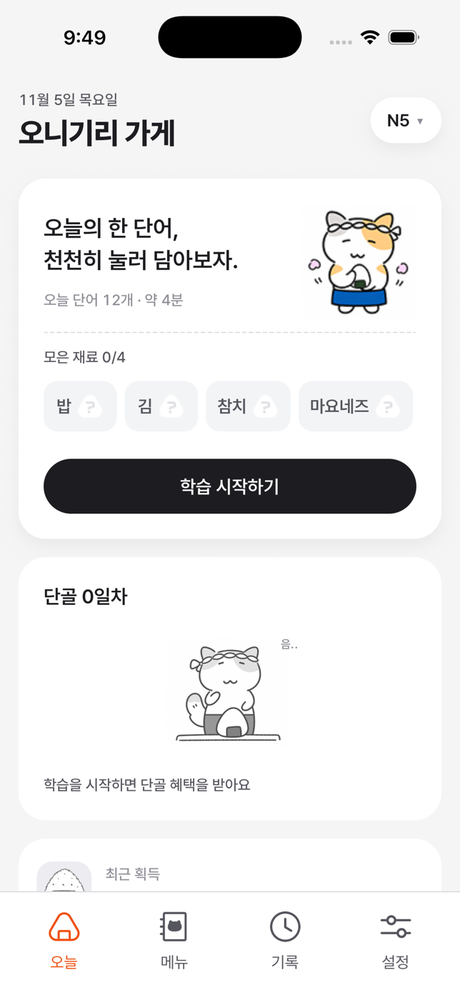
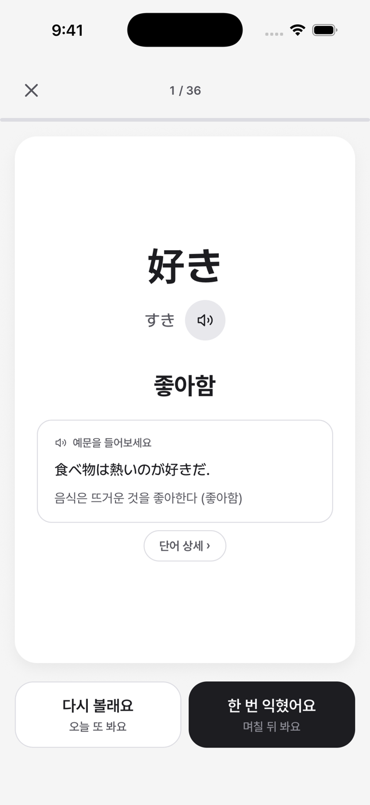
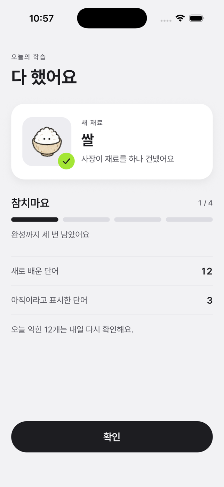
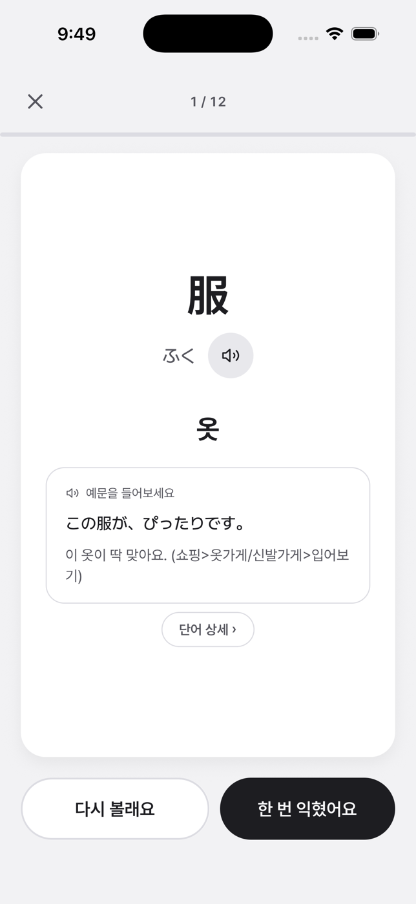
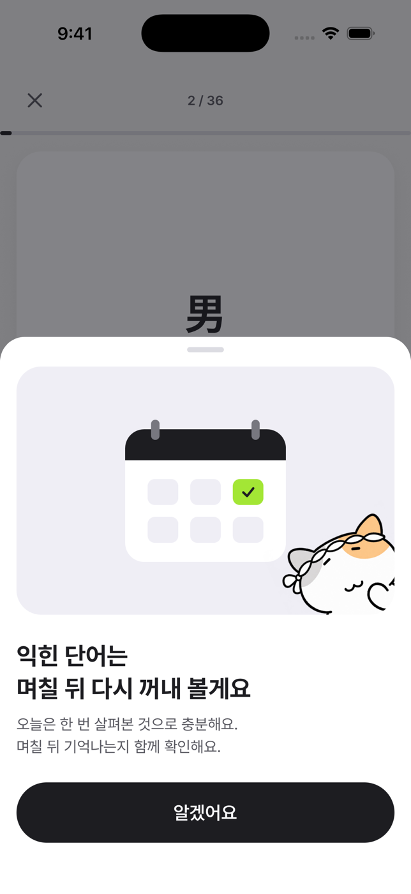
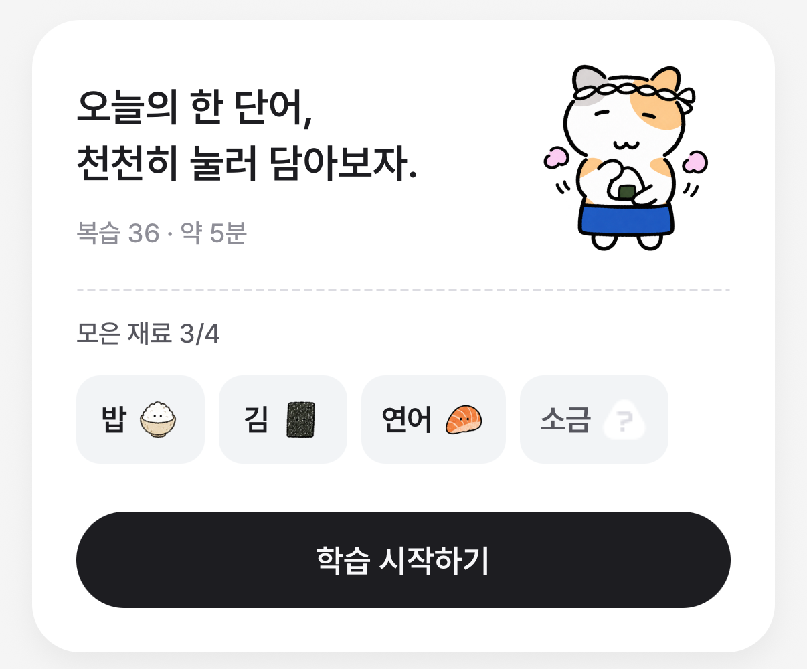
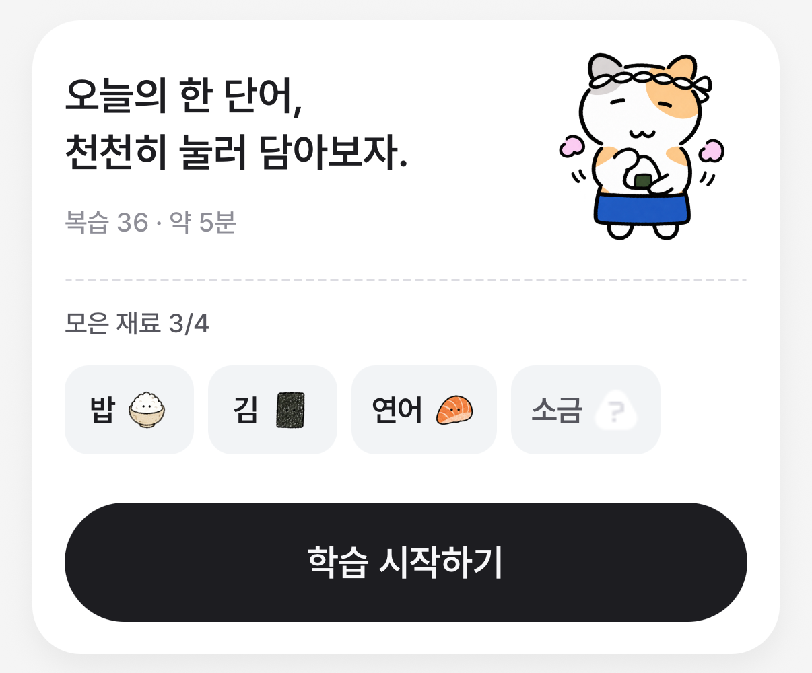

매일 일본어 단어를 외우는 일을
가게에 들르듯 가볍게 만들었어요.
하루 12단어를 외우면 오니기리 재료가 쌓이는 일본어 단어 앱이에요.
디자이너 1명(저)과 개발자 1명이 만들어 iOS·Android에 출시했고, 지금도 업데이트하고 있어요.
기초 단어·문법은 있는데 문장이 안 트이는 학습자. 교재는 샀지만 출퇴근길에 잘 꺼내지 못해요.
5명 모두 '의지·꾸준함'을 가장 어려운 점으로 꼽았어요. 한자 난이도를 최고점으로 준 사람도 3명.
하루 학습을 출퇴근길에 끝낼 만큼 짧게 나누고, 외운 만큼 재료가 쌓이는 게 눈에 보이게 했어요.

하루 학습 → 결과 → 다시 학습,
외운 단어가 재료가 되는 한 바퀴



평가 버튼은 두 개만 —
‘다시 볼래요’와 ‘한 번 익혔어요’
복습 간격은 기억 모델(FSRS)이 뒤에서 계산해요. 학습자는 ‘알았다 / 아직이다’만 고르면 돼요.
공부한 양을 보상으로 —
재료 4개 모으면 오니기리 완성
하루 학습을 마치면 재료 1개, 4개가 모이면 메뉴 하나가 완성돼요. 연속으로 오면 ‘단골 도장’이 쌓여요.
출시 후 확인한 두 가지 문제를
앱에 반영했어요
사용 데이터는 아직 없어서, 빠른 테스트와 출시 코드 시뮬레이션으로 먼저 확인했어요.
버튼 이름을 읽지 않고
“오른쪽 버튼”으로 기억했어요
“하루 12개로 정했는데,
며칠 쉬고 오니 너무 많아요”
- 세션 완주율하루 학습을 끝까지 마치는 비율
- 쉬고 돌아온 뒤 3일3일 이상 쉰 사람이 다시 이어서 학습하는지
- 7일 연속 학습단골 도장이 꾸준함을 지탱하는지
버튼 이름은 그대로 두고,
누르면 생길 일을 보여 줬어요
참여자는 버튼 글자보다 위치·색으로 기억했어요. 설명문을 늘리는 대신 두 단계로 바꿨어요.
카드가 ‘며칠 뒤 달력’으로 들어가는 바텀시트. 빠른 테스트 3명 중 2명이 ‘이 단어가 다시 나온다’고 설명했어요.
나머지 1명은 시트를 본 뒤에도 ‘다음 버튼’으로 이해했어요. 시트는 한 번 보고 사라지니, 결과를 버튼 안에 남겼어요 — 높이 56 → 72, 라운드 20.


화면마다 달랐던 스타일을 정리하고,
Figma와 앱 코드의 기준을 맞췄습니다.
시안 이미지를 보고 구현하던 방식에서 벗어나, 공통 스타일과 컴포넌트의 기준을 정리했습니다.
AI로 문서와 Figma, 코드의 차이를 찾아 수정 초안을 만들고, 직접 검수한 뒤 개발자 리뷰를 거쳐 반영했습니다.
최신 화면을 기준으로 여백, 카드 형태, 버튼 구성을 정리했습니다. 색상은 행동, 브랜드, 완료 상태의 역할을 구분하고, 각 결정의 이유를 문서에 남겼습니다.
AI로 문서와 Figma, 앱 코드의 토큰과 컴포넌트를 비교했습니다. 차이가 있는 항목은 공통 토큰과 컴포넌트를 사용하도록 수정 초안을 만들고, 새로운 글자 크기 직접 지정을 검사하는 규칙을 추가했습니다.
변경한 화면을 시뮬레이터에서 확인하며 이미지 넘침 등 구현 문제를 수정했습니다. Figma의 글꼴 연결과 카드 여백도 직접 정리하고, 개발자의 코드 리뷰와 병합을 거쳐 앱에 반영했습니다.
정리한 Figma 컴포넌트
직접 지정한 위치
* 토큰 값은 검사 대상 범위에서 비교했습니다. Figma 컴포넌트 중 나머지 4개는 화면별 구현에 대응합니다.
흰 카드 여백을 16 하나로 정하고, 화면별 지정을 없앴습니다
화면마다 22·18·24로 달랐던 카드 안쪽 여백을 기준 문서에서 정하고, 공통 Card 컴포넌트가 그 값을 쓰도록 바꿨습니다.
| 속성 | 토큰 | 값과 범위 |
|---|---|---|
| 반경 | card | 24 · 흰 카드는 전부 (D0-3) |
| 여백 | x4 | 16 · 모든 흰 카드, 이전 세 단계 16·20·24는 폐기 |
같은 PR에서 단골 카드의 18, 완료 화면의 24 지정도 지웠습니다.


- 토큰 대조 테스트 · Figma 변수와 코드 값을 양방향 비교,
x416 ·card24 일치 - 컴포넌트 대응 테스트 · Figma
card↔ 코드Card가 실제로 있는지 확인 - 시뮬레이터 검수 · 머지 후 바뀐 화면을 직접 확인하고 개발자 리뷰를 거쳐 반영